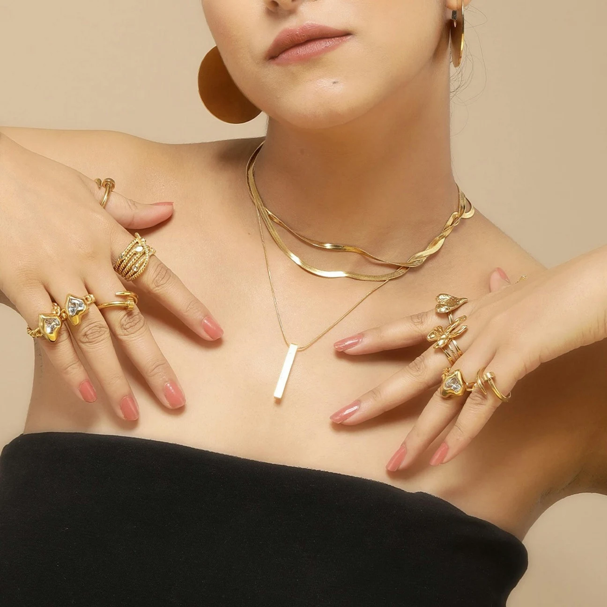
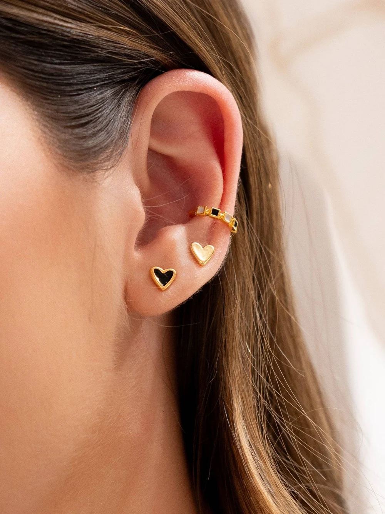
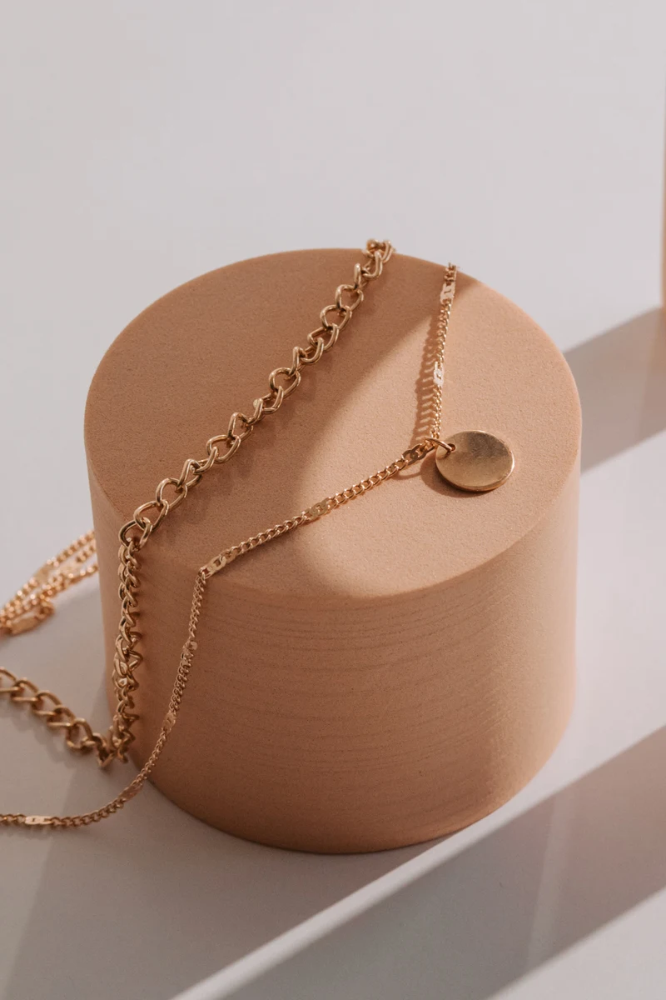

JOYAS QUE CONECTAN CONTIGO
Un detalle que
lo dice todo.
Cadenas, aretes y pulseras para acompañarte en cada versión de ti.
Encuentra tu próxima joya ↗✧Tan única como tú.
Así es nuestra colección.
Así es nuestra colección.

EL ARTE DE LOS PEQUEÑOS DETALLESElige lo quete hace brillar.ESTACIÓN MARTE · ACCESORIOS
UNA PIEZA, MUCHAS FORMAS DE SER TÚ.EXPLORA LA COLECCIÓN ↓
01 Dorados que enamoran
✧02 Plateados que iluminan
✧03 Detalles para compartir
ENCUENTRA TU FAVORITO
Tu próximo pequeño tesoro.
✧
Tu joya está por descubrirse.
Prueba con otra búsqueda o explora toda la colección.
Precios en soles · Consulta la disponibilidad antes de confirmar tu pedido.
Imagina tu próximo detalle.
Sube una foto y descubre cómo se ve una de nuestras piezas sobre ti.

GOLDEN, SILVER & YOU.EL UNIVERSO DE ESTACIÓN MARTE
No necesitas
una ocasión.
Solo ser tú.
Hay piezas que se vuelven parte de ti. Un corazón, un destello, ese dorado que combina con todo. Encuentra los detalles que cuentan tu historia.
Descubre la colección ↗Estación Marte ✧
LOS DETALLES SE QUEDAN
Un regalo.
Todo un universo.
Para alguien especial. O para ti.
Arma tu selección y encuentra una presentación que la haga aún más bonita.

CONMUCHO
amor.
¿Encontraste tu favorita?
Conversemos y hagamos tu selección especial.